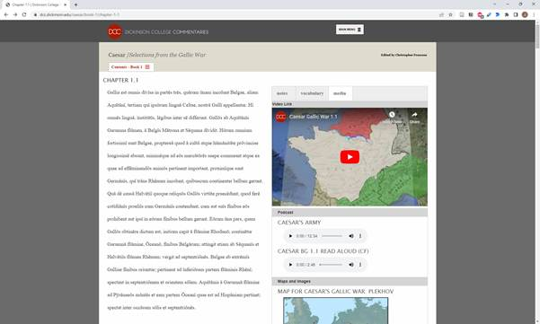
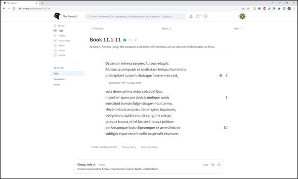
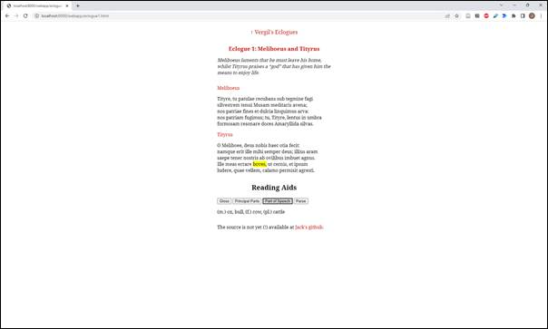
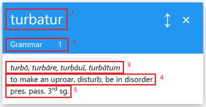
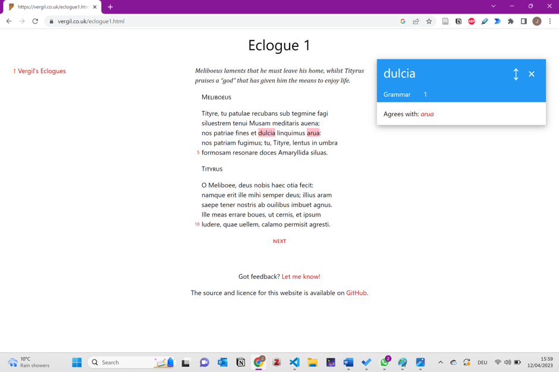
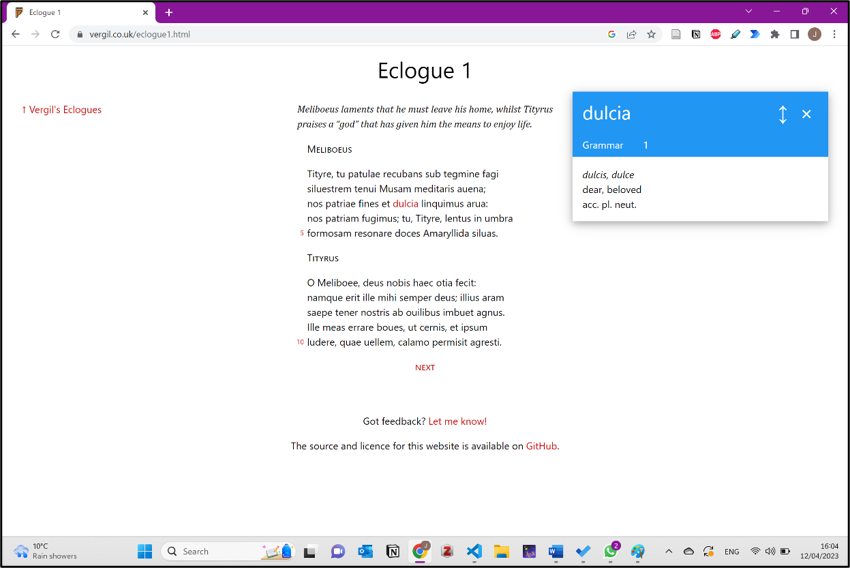
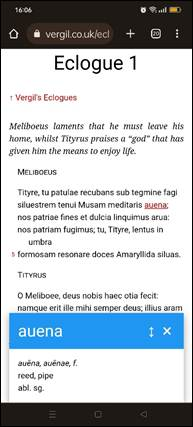

1 Introduction
Since October 2022 I have been developing a new online reader for Vergil’s first eclogue, hosted at vergil.co.uk.1 The project came out of a long-standing interest in language and reading tools on the web for Classical languages.
Reading ancient texts in online environments can be an unsatisfying experience. Many applications are cluttered with too much information and are poorly designed. Some are more graceful, but provide language or interpretative help of a limited kind, usually focussed on word-based analysis. Language tools are often over-general, giving the broadest interpretation for a word, or giving all the possibilities for a word-form, but not helping a reader understand it in the context of the text in question.
Consequently, I set out on my own project. I wished to make a small contribution to digital classics by making an online reader; making it would be the best means of learning the digital skills required; and in developing the project from scratch I would learn what are the difficulties of making these kinds of tools.
2 Initial directions
2.1 Audience
I did not have the time or expertise to write a full scholarly commentary online, but I sought to make vergil.co.uk suitable for the type of reader who understood the principles of the language, but who still sought help for oddities and unusual usage.
This provided me with a clear picture of the intended audience: the intermediate reader who has learned Latin in, say, secondary school and is at A-level or just after, and has just started more difficult texts; the undergraduate in the first half of their degree, approaching texts for literary study; also those autodidacts, mature and unaffiliated students, for whom the internet is a primary means of accessing scholarly materials, but who are not able to devote much time to language study, and whose aim is simply to read.2
2.2 Text
As a text, I chose Vergil’s Eclogues. The poems are ten discrete passages, enabling me to start with a single poem, and expand depending on my progress. Currently, there are no open-source, online commentaries dedicated to the Eclogues.3 In themselves, the Eclogues represent some of the most attractive Roman poetry, focussed on a period and an author that is central to the study of ancient Roman literature. They are typical fare for undergraduate papers in Latin literature. Finally, I have a long familiarity with and fondness for these poems.4
Importantly, a good text of the Eclogues is also available under Creative Commons licence from the Perseus Digital Library Project.5 As such it also forms one of the corpus texts which have been lemmatised by Thibault Clérice (2021a) using the LASLA Latin model (2021b). These provided me with the fundamental building blocks, without which it would have been impossible to consider the project.
2.3 Existing resources
For inspiration, I picked out three current online applications which I admired: the Greek Learner Text Project (GLTP); the Dickinson College Commentaries (DCC); and aeneid.co.
2.3.1 The Greek Learner Text Project (GLTP)

Figure 1 – Partial screenshot of “Edwards’ Salamis in Easy Attic Greek”, digitalised by Christoph Jasinski, part of the GLTP.
GLTP is a collection of Greek texts designed for reading for those who have mastered the fundamentals of the language. The group behind the project is a collection of classical and biblical scholars, many unaffiliated to any institution. The texts (some completed, some in development) are all published under a Creative Commons Attribution-ShareAlike 4.0 licence, meaning that it can be copied, used, and adapted, even for commercial purposes, provided appropriate credit is given.
Some of the texts in the project make use of Alpheios (see the query box on the left-hand side of Figure 1), a JavaScript library to assist reading. This impressive tool gives dynamic morphological analyses of words, definitions, access to grammars and lexicons within the reading environment, and more besides. The analyses give all the morphological possibilities; it gives no recommendation and is not tailored to the particular text.
The strength of GLTP lies in the attractive design of the reading environment, in which the text is king. The work itself is central on the screen, and grammatical and dictionary help are both near to hand and easily dismissed. The project is clearly aimed at those who use desktops for such reading; using the website via a mobile phone, I was not able to query words, which rely on a double-click to bring up Alpheios.
2.3.2 Dickinson College Commentaries (DCC)
DCC provides a range of texts in a format much more alike to that of the traditional commentary. The screen is split in two with text (macronised for Latin) on the left-hand side, and notes, vocabulary, video, audio, and image files on the right in tabs, for the reader to select as he or she wishes. In its own words,
“DCC focuses on the needs of Latin and Greek learners and non-professional students. It prioritizes accurate scholarship, pedagogical utility, and attractive design, while remaining mindful of issues of infrastructure and networked data. It avoids the pitfalls of providing too much information, and of relying on open or wiki annotation, which would deprive the reader of the comfort of expert guidance.”6
Opening the “Selections from the Gallic War”, (Figure 2) however, does not reveal the “attractive design” admirably aimed for. And far from avoiding the pitfall of providing too much information, I never knew till opening the “Media” tab that I required 26 maps of Gaul to understand what I was reading.
DCC’s texts are not interactive, and other than occasional grammatical notes, there is no morphological analyser. But the work, including the notes and vocabulary, is curated by a professional classicist, giving the reader confidence in the notes.
Like GLTP, DCC is licenced under a Creative Commons Attribution-ShareAlike License.
Figure 2 – A screenshot of Caesar’s “Selections from the Gallic War”, ed. Christopher Francese for DCC.
2.3.3 Aeneid.co
Aeneid.co was published by Ben Johnson, a Latin teacher in Maine. It is tailored especially to students and teachers in secondary education. In addition to the text, it includes summaries of passages, video explanations on matters of language and style, vocabulary tools to find a word’s meaning, and the functionality to annotate the text with reader-created notes.
The layout and interactivity of aeneid.co is highly attractive (Figure 3). Since reading is chunked, there is never too much text to overwhelm a less confident reader, and there is plenty of space for other information. Principal parts, with simple but appropriate glosses are accessed at the click of a word; core vocabulary is identified, and users can “star” words for learning in vocabulary list. Best of all, readers may add their own comments, line by line, which are neatly opened and hidden with a button to the side of each line. Uniquely among the similar reading environments I know of, the website is also responsively designed for mobile access. However, it is a commercial enterprise, a limited liability company, requiring paid subscription. The work is copyrighted and there is no open-source licensing.

Figure 3 – Screenshot of aeneid.co reading panel for the beginning of Book XI.
2.4 Difficulties in reading
How should a digital project help a reader read?
There are the obvious difficulties with reading classical texts: the Roman world is very different to our own; and even seasoned Latinists have a relatively unfluent comprehension of the language.7 But the actual task of reading itself is also a more laboursome affair. Classical reading rarely involves the one book. A grammar, dictionary, and commentary (or several) are often all out at once on the desk. Not everyone has access to such resources, particularly ones that are quality and up to date. Readers do not always know which materials will help them most with a particular text, or with a particular problem they are having. Indeed, it can be hard to articulate the problem one has come across with terminology such that one can find it in a reference work. And then, looking things up just takes a lot of time.
School readers from the 19th and first half of the 20th century were a print solution for intermediate readers of their time.8 These works sought to provide “in a small compass such help to the thorough knowledge of this book as it is probable would be most useful” to intermediate students.9 The material provided is very brief, and the books are slim and pocket-sized. Language notes and, sometimes, a text-specific vocabulary list are at the back of the book. Only the most important matters of literary or historical context are addressed in the short introductions. An editor’s job for such volumes was not merely to select the material, but also limit its quantity.10
Moreover, these volumes maintain a focus on the text in question. To take one example, a 1953 reprint of Shuckburgh’s Caesar’s Gallic Wars VII, part of the Elementary Classics series, fills the small pages with the text and breaks it up only by section numbering and the briefest of scene-setting blurbs in English.
2.4.1 Difficulties of the Eclogues
The Eclogues have their own difficulties for an intermediate reader. Whilst many readers will have come to Vergil before this text, the Eclogues are very different to the Aeneid. Such readers are unlikely to have heard of Theocritus or Callimachus, and the highly allusive imagery and language may instead strike a new reader as very strange. Despite its long pedigree, pastoral poetry is relatively unfamiliar to a modern audience. Contextual information, then, is important. The difficulty, for an online reader like vergil.co.uk, is bringing that to the attention of the user at the right moment.
3 Design
By now I had some guiding principles for designing vergil.co.uk. As we shall see, the project has not fulfilled these entirely, but they have been the basis for making various design decisions. They are:
-
the reading environment should focus on the text and be pleasant to use (including responsive design to support mobile devices);
-
information should be provided only when it helps a user read the text;
-
the minimum information necessary should be provided;
-
the project should be open-source.
3.1 Layout
I was impressed by the focus on the text which the Greek Learner Texts Project has. Because of this, and because I was less confident in using CSS, I began the project using a copy of their stylesheet. The layout for GLTP puts the text directly in the middle of the page with wide, clean margins on either side. (See Figure 4 for an early version of vergil.co.uk.) After I had developed enough of the website’s functionality (Figure 7), I revisited the design and created my own stylesheet. But the central text with margins remained.

Figure 4 – Screenshot of an early iteration of vergil.co.uk, using GLTP’s standard CSS template.
3.2 Chunking
I also admired the design choices of aeneid.co, which splits up long texts into manageable chunks. The Eclogues are short, consisting of around 100 lines apiece. But 100 lines of Latin is a daunting task for an intermediate reader, and represent several hours of work.11 100 lines also make for a lengthy webpage. Ten lines, on the other hand, fit nicely onto the screen (including typical mobile devices, with enough space for lookup boxes), and represent a much more manageable period of study of, say, 30 minutes.
I have therefore split the poems into chunks of about ten lines each (between seven and thirteen lines). Boundaries are where sense allows.
3.3 Blurbs
In addition, I have written short blurbs at the start of each chunk. This is a common feature, not only of aeneid.co and the print readers discussed above, but also of the kind of unseen translation exercise one might find at A Level.12 A short prompt serves to orientate the reader and is the minimum of assistance needed to make a ‘cold’ text approachable. Consider lines 19–20:
1.19–20
M. Sed tamen, iste deus qui sit, da, Tityrus, nobis.
T. Urbem, quam dicunt Romam, Meliboee, putaui…
Meliboeus’ line is the end of one chunk, Tityrus’ the start of the next. At first reading, Tityrus’ reply may appear something of a non sequitur, but providing a short blurb can confirm to the reader that Tityrus’ speech does indeed concern Rome, not the deus.
The blurb, being summary, also encourages a reader to remember the “big picture” of the poem, and not to pay attention only to case endings and individual words.
3.4 Translations
Tricky parts of the text have notes that give idiomatic translations into English when a literal, word-by-word analysis might be expected to be unlikely to give a good understanding of the Latin. But otherwise, I have provided no translations on the site. There is no doubt that translations are of great help to many readers. But two reasons convinced me not to provide this facility. First, good translations already exist for the Eclogues, including ones that are publicly available.13 Second, for vergil.co.uk to succeed as a reader it must help a user read the Latin text, with its ambiguities and difficulties included, not an English interpretation which too easily becomes the “correct” translation. Ambiguities and alternate translations are thus better given in comments to particular passages.
3.5 Interactivity
Much of the reference material available in vergil.co.uk is given to a reader when he or she queries the text. I have sought to keep the mechanism for such queries simple, and to provide a selection of the most useful information, not a comprehensive list of the material.
My first design for querying the text proved too complicated. I had originally envisioned an incremental unveiling of a word’s properties. A first query might provide the principal parts of a word, a second its gloss, a third its morpho-syntactic analysis, and a fourth its longer dictionary entry. But such a progression – whatever order is used – assumes a linear path to deeper knowledge of a word, and it is not clear that readers would favour this approach. Moreover, each query then required its own design and implementation. Better instead to design a single query box with all the relevant information for a word-level analysis.
I then envisioned separate pop-up query boxes, one for word-based analysis, and another for contextual and syntactic notes. But this caused problems for mobile users. Two boxes open at the bottom of the screen (where they would stack in mobile portrait mode) took up considerable space. Moreover, mobile users, lacking a keyboard, have fewer options available to them for interactivity. It was better to keep the core functionality to a simple mouse click or finger tap, and at the same time declutter the page by having a single query box to pop up and contain all relevant information: definitions, parsing, syntactic, contextual, etc.
This single query box solution has thus far remained the project’s query mechanism. (Figure 5)

Figure 5 – vergil.co.uk’s query box
When a user first clicks on a word, the query box shows:
1. the wordform as it is in the text (box 1 in Figure 5);
2. whether there are other notes (box 2, which shows the “Grammar” note and “1” further note);
3. principal parts (box 3);
4. a gloss (box 4);
5. and a parsing (box 5).
The disadvantage to this solution is that notes beyond “grammar” section are hidden. To find such notes, one must click through the query box. (In Figure 5, the “1” indicates a note, but its contents are unknown unless it is clicked on.) Moreover, there is no indicator on the text as to which words have these notes attached to them.
3.5.1 Principal parts
The principal parts are included as a fundamental reference tool, to confirm the lexeme and its morphology.
The data comes from Logeion’s version of Lewis & Short, based on the Perseus Project’s digitalisation.14 Where Lewis & Short gives all alternative forms (e.g. the genitive of Amaryllis is given as either Amaryllidis or Amaryllidos), I have edited entries to give only the forms that exist in the text. The disadvantage is that users may not recognise an alternate form of the word in a different text. But this strategy is consistent with the project as a reader for the Eclogues, not, say, a vocabulary builder.
The principal parts are written with macrons. Macrons are used nowhere else in the text or notes, as they would in general clutter the text, and would be unnecessary for an intermediate student. But a reader will occasionally wish to check the length of a vowel, e.g. to help with scansion or pronunciation of the text. The dictionary form, then, gives the minimal information necessary to afford a reader such help.
3.5.2 Glosses
Glosses – short definitions which are specific to a context – are another fundamental reading aid. All users will need to look up unfamiliar vocabulary items, and a gloss allows the user to continue reading, as opposed to finding an appropriate definition in a long dictionary entry.
Glosses were first drawn from Logeion’s short definitions.15 These have been necessarily edited, as some gave more alternatives than required (e.g. ager: “productive land, a field, farm, estate, arable land, pasture”), and others were unsuitable for the context (e.g. “touch” is too vague for tactas at l. 17, which is specific to, and implies, a lightning strike). I have made these edits by hand for the whole poem, with reference to the Oxford Latin Dictionary and to Clausen (1995) and Coleman (1977). This is a luxury of editing a single poem of only 84 lines, with only 360 separate lemmas. Still, this specificity is what many online resources lack.
3.5.3 Parsing
Parsed forms of a word are one of the more common reading aids given in several online readers. Intermediate readers might be expected to know their paradigms well enough to make such help unwarranted. But parsing unfamiliar words can be time-consuming, and delay the process of reading.
In addition to lemmatisation, Clérice (2021a) provides a morphosyntactic description (MSD) for each token. As with lemmatisation, where a form is ambiguous, the most likely analysis is given (that is, the one predicted by the artificial intelligence model). This contrasts with many other online tools (e.g. Perseus, Alpheios), which give all possible analyses for a particular word-form, and which ignore context.
In a handful of instances, I have edited MSD data from Clérice (2021a) that was incorrect. In displaying the data in the query box, I have also omitted several superfluous forms, which only cluttered the panel. For example, adjectives such as agresti (l. 10) are marked as positive (as opposed to comparative or superlative), which a reader will take for granted.
3.5.4 Other comments
A user will have a wide range of other queries for the text. All other kinds of notes – syntactic, pragmatic, contextual, etc. – are catered for by a single comment system. This makes for a simple process for querying the text, but more time would benefit the design to make it clearer and more structured.
I have used no source data for the other comments. With hindsight, I might have profitably used the notes from the two reader editions of the Eclogues available on archive.org: Sidgwick (1893) and Page (1898). This would have provided an immediate base of quality notes (even if they are rather old-fashioned), which could afterwards be adapted, edited, and added to.
Syntactic notes seem of particular importance for a user’s queries. Questions like “What does this word agree with?” or “Which clause does this verb take?” are not best answered on a word-by-word analysis, and can prove a real stumbling block to reading. For the first ten lines, comments showing agreement have been completed for all adjectives, and this will be extended to the rest of the poem. This is done by referencing the relevant words with a hyperlink-like format in the comment. When the user clicks on these, the main text highlights those words together. (See Figure 6.)

Figure 6 – the query box showing a comment on the agreement of dulcia and arua, with highlighting.
Otherwise, commentary notes are mostly lacking, and only the first two sections have any quantity of notes. The difficulties are partly conceptual, partly technological. It is difficult to write comments relying only on my judgment. Reader feedback and experience of the poems in a teaching environment would reveal problem areas. More practically, the comments are written and stored in an XML format, which have proved very cumbersome to edit and add to.

Figure 7 – Screenshot of the latest iteration of vergil.co.uk.
4 Technical development
I came to this project having completed online tutorials in Python and JavaScript many years ago, and with a simple understanding of HMTL and CSS. I had never deployed a web application before. It has been necessary to learn the technology at the same time as building it. With little time available to research alternatives, I tended to use what was available and looked simple to learn. Even so, there have been several instances of my learning material that was never used in this project, but these have nevertheless contributed to my general understanding of web development, and given me a wider base of knowledge to build on in future.
Since I sought to diverge from conclusions that other projects have reached, and to build my programming and technical skills, it made sense to build vergil.co.uk from scratch.
4.1 Data preparation
Since the data for this project is unlikely to change frequently (the text, comments, and lexicon entries will rarely be edited), it made sense for me to preprocess the data. Preprocessing also saves time in providing responses to the user’s queries.16
Early in the project I expected to do my own lemmatisation work, and having previously met the Classical Language Toolkit,17 a Python library, I considered using this. As it happened, I recognised that CLTK’s lemmatisation has a low enough accuracy (~90.34%)18 to still require considerable work by hand, and that Clerice’s Latin Lemmatised Texts19 already provide this information for the same Perseus text of the Eclogues.
I have nevertheless used Python to extract data from the various sources and collate a text- and project-specific file that is easy to manipulate. To minimize the size of files – and so make data requests faster – I also only extracted data that was relevant to the text at hand. So, for example, when I made a file to refer to from Lewis & Short’s lexicon, I pulled only those words that were in the text of the Eclogues.
4.2 Building the website
I have tried to keep the website as slim as possible. There is no user login or customisation, for example. And, while there is data to provide to the user, none of this is edited during a user’s session; it is content to be delivered in certain circumstances. The application is interactive, but it can be adequately served as a static website.
This took me some time to understand. When I began, I assumed that databases were the only way to store data queries, and consequently I found myself drowning in a sea of SQL. Later I realised that the XML format in which the Latin Lemmatised Texts analysis and the Perseus text were both provided was entirely acceptable, both for storing and retrieving the data.
To display the data in an interactive manner and without reloading the page, I have learned about AJAX (Asynchronous JavaScript and XML). This is important for the readerly experience not to be interrupted by loading times. But it has been one of the more challenging subjects to understand, and there have been many bugs that I caused by not realising that asynchronous calls for data still require time to retrieve the data.
Both to write code more quickly and to assist with the use of AJAX, much of the website’s JavaScript is written using jQuery. Only several months in did I realise that modern developers use front-end frameworks like React.js and Vue.js for a better user experience and quicker development. There would be benefit to using one of these frameworks for vergil.co.uk – such as a modular development, and faster responses due to a virtual Document Object Model. That is something for the future.
4.3 Responsive design
The intended audience of vergil.co.uk include young adults, whom I expect are more likely to use mobile devices to access the website, and to study on smaller screens. It was therefore important to make the website well-designed for phones and tablets. I avoided uncovering yet another large framework or library like Bootstrap or React.js, and kept to as lightweight a solution as I could find: W3.CSS.
The objective for mobile design was to give the text as much space as possible, whilst bringing up queried information as required. Since querying the text required only a single-click on the desktop version, a tap worked in the very same way for touchscreen, and allowed for the same content to be displayed. (Figure 8)

Figure 8 – A screenshot of the latest version of vergil.co.uk on a mobile device.
4.4 Version control
I have learned to use git for the project’s version control, which has come in especially helpful when revisiting previously written code. My first attempt at writing the JavaScript functions for the lookup queries was basically successful, but resulted in lots of code, badly organised, and generally incomprehensible. By using source control, I was able to review and rewrite the code without worrying that I would lose the working first iteration.
This has also led me to GitHub, where the project code is published, in line with my hope to make it open source.
4.5 Hosting and deployment
The project was a small one, and is unlikely to grow except incrementally. The files to be hosted are not large, the number of users is small (see section 5.1). There was no need for extraordinary services. I therefore elected to use a cloud computing provide to host the webapp, and went with Amazon Web Services (AWS). The flexibility of cloud computing allows for growth in the future, but is low cost for small beginnings.
5 Feedback
The website was published in January 2023. Since the end of March, I have advertised its presence to interested persons. It remains in an obviously unfinished state – with only a single of the ten Eclogues available, and with few comments after the early sections. Nevertheless, early feedback is important for informing the project’s development.
5.1 Analytics
Since 3rd April 2023 I have used Google Analytics to receive statistics for site visitors and engagement. As expected, this has revealed only a trickle of visitors – 16 in the seven days to 11th April. These represent those whom I have invited to look at the website and asked for feedback from. But considering the unfinished state of the website, I have been pleased that there have been some people who are at least interested in the concept enough to respond to such requests!
5.2 User feedback
I publicised the website on two online forums for classical languages, popular especially with autodidacts.20 I have also requested feedback from fellow Classics students. The response has been meagre so far, but it has borne some immediate fruit. One Safari user reported a bug which prevented him from querying the words with a click, and, embarrassed but grateful, I was able to fix a regular expression in the code that was not compatible with iOS. Another user found the vocabulary lookup helpful. A third looked forward to more grammar and contextual notes.
In the future I hope to put the project in front of a class of students – either at A Level or undergraduate – who are studying the Eclogues. I also hope to ask volunteers to go through the website with me at hand, to get a more in-depth set of feedback.
6 What’s next
Thus far vergil.co.uk is not yet the full resource to help intermediate readers read through the first poem of the Eclogues. It does provide the gloss and parsing information, and it does provide an open-source reading environment that is easy and pleasing to use. The most important short-coming is the comment system, but further thought is also required for how to provide an introductory narrative to the Eclogues as a whole.
Commentary notes are required for the whole of the poem. This will be best achieved, however, with a new system that solves the problem of writing new commentary notes, and replacing the use of XML. Two alternatives suggest themselves: first, to use JSON instead of XML, which would be quick to implement, and would make writing new comments moderately quicker; second, to implement a database of comments which would be much more flexible, but would require considerably more work.
Moreover, the comment system is too hidden, as it isn’t obvious where extra comments can be found in the text. A new means of signalling comments to the reader is required. My best idea for a solution is to show the number of comments at the end of a line, like a line number on the right hand side, which can be clicked to see all the comments for words in that line. Classification of comments may allow users to filter out those which are less helpful for them, and it will also clarify the kinds of comments that are required.
Currently, the project does not provide the user with a general introduction to the Eclogues. The particularities of the work (see 2.4.1) do require some further explanation for an intermediate reader. I have held off deploying a short narrative introduction on a new web page because that seems a poor way to present the material. A video introduction would be far better to hold the attention of a user, and to convince the reader of its value.
While some elements remain outstanding to make vergil.co.uk fully feasible as a reader, the project has succeeded in its other objectives. I have acquired a wide range of technical skills and understanding for web applications (see section 4). By building the website, I have also had to wrestle with the conceptual and design problems, such as determining what tools are necessary for a reader, and how to build systems which serve readers’ needs. I am pleased that vergil.co.uk represents a small contribution to digital classics, and one which I will continue to build and tinker with, to see it be fully useful to readers.
7 Bibliography
Unless otherwise expressed, all digital resources were accessed 12 April 2023 and were correct at that date.
Alpers, P. The Singer of the Eclogues (Berkeley 1979)
Alpheios Project (2019) link
Beard, M. “What does the Latin actually say?” in The Times Literary Supplement (n.d.) link
Burns, P. J. “Backoff Lemmatization as a Philological Method” (2018) link
Butterman, L. nodictionaries.com (2008) link
Carter, A. Latin Unseens for A Level (Bristol 2005)
Clausen, W. A Commentary on Virgil: Eclogues (Oxford 1994)
Clérice, T. “Corpus Latin antiquité et antiquité tardive lemmatisé” (2021a); version 0.1.2 link
- “Pie Latin LASLA Models” (2021b); version 0.0.6 link
Coleman, R. Virgil: Eclogues (Cambridge 1977)
Crane, G. R. (ed.) Perseus Digital Library; version 4.0, 22 Nov 2022 link
Dik, H. (ed.), C. T. Lewis & C. Short A Latin Dictionary (Oxford 1879); electronic XML files at GitHub: link
Dik, H., J Goldenberg, M Shanahan Logeion (Nov 2022) link
Fairclough, H. R. Virgil: Eclogues, Georgics, Aeneid 1-6 (Cambridge MA 1916), hosted at theoi.com link
Farrell, J. (project director) et al., The Virgil Project; version 2.0 link
Fowler, D. “Criticism as Commentary and Commentary as Criticism in the Age of Electronic Media” in G. W. Most (ed.), Commentaries/Kommentare (Göttingen: Vanderhoeck & Ruprecht, 1999), pp. 426–442.
Francese, C., B. Mulligan, E. Casey, A. Traill, J. G. Miller, W. Turpin (eds.), Dickinson College Commentaries link
GLTP Team, Greek Learner Texts Project link
Greenough, J. B. (ed.) The Bucolics, Aeneid, and Georgics of Vergil, (Boston 1900); Perseus Digital Library link
Johnson, B. aeneid.co; version 5 Aug 2019 link
Johnson, K. Classical Language Toolkit (2021) link
OCR, A Level Specification: Latin, version 1.6 (October 2022) link
Page, T. E. P Vergili Maronis Bucolica et Georgica (London 1898), available at archive.org link
Shuckburgh, E. S. Caesar: Gallic War Book VII (1933, repr. 1953)
Sidgwick, A. P. Vergili Maronis Bucolica (Cambridge 1893, repr. 1901), available at archive.org link
Vergil Project Team, Vergil Project 2.0 link
Wagner, D. P. “Publishing History” (2005-2023) link
Footnotes
-
Source code for the project is hosted on GitHub. Unless otherwise specified, all links have been accessed, and are correct, as of 12 April 2023. ↩
-
See 2.4 for a consideration of reading classical texts online. ↩
-
Poems 1 and 4 are in development by Danielle La Londe (Center College) for Dickinson College Commentaries. The Vergil Project provides resources for the Aeneid, but neither the Eclogues nor the Georgics. Similarly, aeneid.co. Perseus and nodictionaries.com provide reading tools for a whole corpus of texts, and are not catered for individual works. Oxford Scholarly Editions Online has a very good digital version of Clausen (1995), linked to the Oxford Latin Dictionary and other resources; but this is a subscription service for academic institutions. ↩
-
The difficulties of choosing this text are considered at 2.4.1. ↩
-
J B. Greenough (ed.) The Bucolics, Aeneid, and Georgics of Vergil, (Boston 1900); Perseus Digital Library link (accessed 3 November 2022) ↩
-
See, e.g., the Elementary Classics, Modern School Classics, and Pitt Press series, detailed at Wagner (2005-2023). ↩
-
Sidgwick (1893), p. 5 ↩
-
Contrast the excitement digital classicists had at one time for the “infinitely large margins” (Fowler 1999) provided by digital space. ↩
-
The unseen translation papers for OCR A Level include a verse text of less than 20 lines. This exercise is expected to use up less than half of the 1 hour 45 minutes allocated to the paper. OCR (2022) ↩
-
See, e.g. Carter 2005. ↩
-
In the “Resources” section, I have linked to Fairclough (1916), hosted at theoi.com, and recommended Alpers (1979) for a verse translation. ↩
-
Dik, Lewis & Short (1879) ↩
-
Dik et al. (Nov 2022) ↩
-
This is one of the reasons why I chose not to use a dynamic tool like Alpheios. Alpheios does not provide the speed of response, or the specificity, to satisfy the requirements of vergil.co.uk. ↩
-
Johnson (2021) ↩
-
Burns (2018) ↩
-
Clérice (2021a) ↩